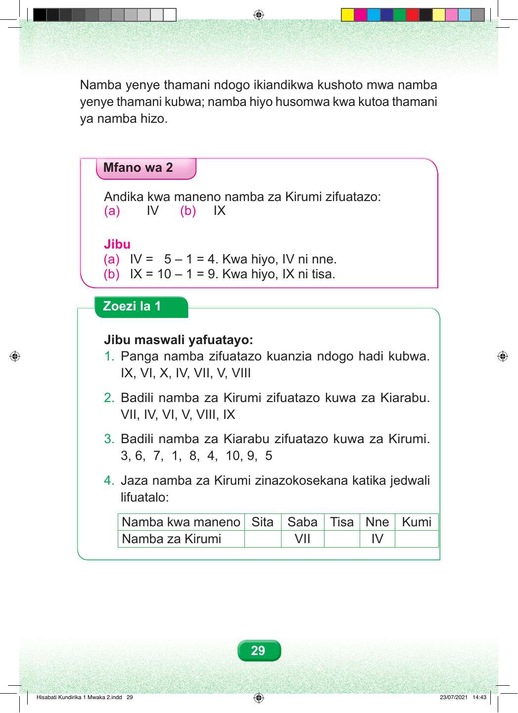

Namba yenye thamani ndogo ikiandikwa kushoto mwa namba yenye thamani kubwa; namba hiyo husomwa kwa kutoa thamani ya namba hizo. Mfano wa 2 Andika kwa maneno namba za Kirumi zifuatazo: (a) IV (b) IX Jibu (a) IV = 5 – 1 = 4. Kwa hiyo, IV ni nne. (b) IX = 10 – 1 = 9. Kwa hiyo, IX ni tisa. Zoezi la 1 Jibu maswali yafuatayo: 1. Panga namba zifuatazo kuanzia ndogo hadi kubwa. IX, VI, X, IV, VII, V, VIII 2. Badili namba za Kirumi zifuatazo kuwa za Kiarabu. VII, IV, VI, V, VIII, IX 3. Badili namba za Kiarabu zifuatazo kuwa za Kirumi. 3, 6, 7, 1, 8, 4, 10, 9, 5 4. Jaza namba za Kirumi zinazokosekana katika jedwali lifuatalo: Namba kwa maneno Sita Saba Tisa Nne Kumi Namba za Kirumi VII IV 29 Hisabati Kundirika 1 Mwaka 2.indd 29 23/07/2021 14:43